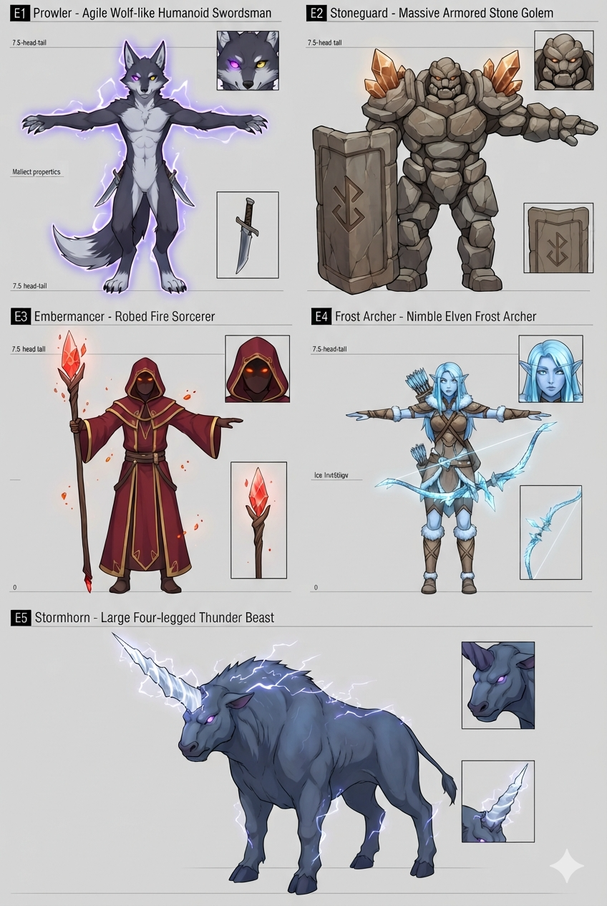

1. 競技場設計 — 三相遺跡
核心概念：廢棄的古代元素研究場，中央是曾封印「三相之核」的圓形儀式場，現為流浪者試煉之地。

| 項目 | 設定 |
|---|---|
| 尺寸 | 直徑 30m 圓形場地 |
| 掩體 | 8 根雷紋石柱（高 6m，3 種變體） |
| 地面 | 深灰石板 + 三道元素裂痕（火紅 / 冰藍 / 雷紫） |
| 光照 | 暴風黃昏：暖金側逆光 + 冷藍雲反光 |
| 元素反饋 | 火→裂縫泛紅光 / 冰→霧面覆蓋 30s / 雷→石柱頂閃電連線 |
| 面數預算 | < 30K 三角面，WebGL 720p 穩定 60fps |
單一封閉場地5 種基底敵人AI 隨機外觀Low-Poly 起步
核心概念：廢棄的古代元素研究場，中央是曾封印「三相之核」的圓形儀式場，現為流浪者試煉之地。
| 項目 | 設定 |
|---|---|
| 尺寸 | 直徑 30m 圓形場地 |
| 掩體 | 8 根雷紋石柱（高 6m，3 種變體） |
| 地面 | 深灰石板 + 三道元素裂痕（火紅 / 冰藍 / 雷紫） |
| 光照 | 暴風黃昏：暖金側逆光 + 冷藍雲反光 |
| 元素反饋 | 火→裂縫泛紅光 / 冰→霧面覆蓋 30s / 雷→石柱頂閃電連線 |
| 面數預算 | < 30K 三角面，WebGL 720p 穩定 60fps |

說明：E1 已依 AI 實際生成調整為「掠焰狼 Ember Prowler」（火系突進狼形），以圖為準。

元素：火 體型：瘦長狼形人（7.5H）
動作：突進 + 火焰斬擊（連續二刀）
武器：火焰彎刀 弱點：冰

元素：地/無 體型：壯碩（8H）
動作：格擋 + 重拳 + 震地
武器：巨盾 + 石拳 弱點：冰/雷

元素：火 體型：法袍（7.5H）
動作：詠唱 + 火彈 + 範圍灼燒
武器：法杖 弱點：冰超導

元素：冰 體型：弓手（7.5H）
動作：後跳 + 冰矢 + 減速陷阱
武器：長弓 弱點：火過載

元素：雷 體型：四足獸型
動作：衝撞 + 踐踏 + 雷吼 AoE
武器：天生雷角 弱點：冰超導
5 基底 × 4 元素 × 3 體型 × 4 頭部配件 × 3 背脊配件 × 4 武器 × 染色（Hue×2）× 光環 = >30,000 種外觀組合，僅需 5 套基底模型 + 14 種配件。